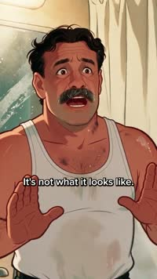
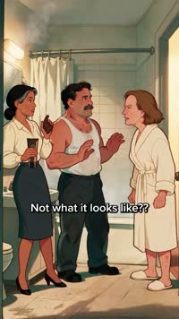
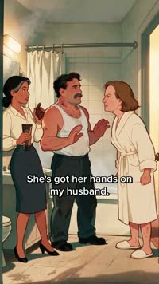
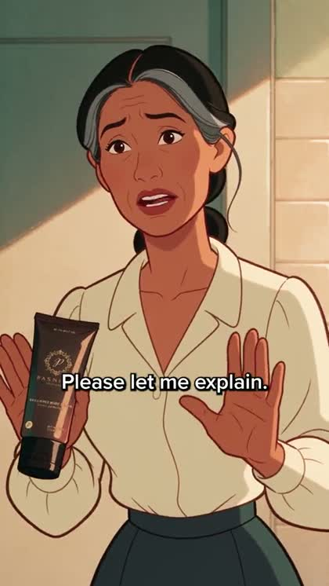

The tools · for the people who make our ads
Take any video that already worked and rebuild it for a brand you're making ads for. You get the script, the shot list and a prompt for every frame — then you generate the shots and cut it. The clip on the right was made exactly this way.
Point it at whatever you want. Nobody has to brief you.
01 — how it works
Nothing gets installed and nothing runs on your computer. If you can save a file to Google Drive and paste into a chat box, you can do this.
Once per brand — who you're selling to, how they talk, what the product looks like. An afternoon, and never again.
A competitor's ad, an organic post, anything. Save it to your Drive.
Upload it to Higgsfield Supercomputer and ask it to describe every scene. That's the part a normal chat can't do.
Paste the chain files into Claude in order. It writes the structure, then the spec.
Point it at your brand folder. The structure stays; the content becomes yours.
Every scene comes with an image prompt and a motion note. Paste them into Supercomputer.
The brief's scene list is your edit order. Then do it again — there's no approval step in the middle.
01 Watch it happen
This is the whole thing, playing out on one real example. Nothing to install and nothing to read first — press a step to jump to it.



Someone walks in on a scene that looks like something it is not. The argument runs while the real explanation — the product — waits until the last beat.

02 — the four tools
Fill in the folder first. Everything after it reads that folder, so nothing you build later makes you re-explain your brand.
Do this one first, for each brand you work on. Put it in your Google Drive and fill it in once.
Any video in, your brief out. Written for someone who has never done this.
48 formats already taken apart, from 377 posts that really worked — some past a hundred million views.
2,626 live competitor ads across 223 pitches, boiled down to the ten shapes that keep working.
03 — the one tool you need
What it is. A chat where you make things. You type what you want — or drop a file in and ask about it — and it does the work: images, video, edits.
Why you need it. Two of the seven steps happen in it: it's where the video gets watched, and where your scenes get made.
The models to use — don't leave it on Auto
| reading the video | gemini-3-flash-preview |
| making the frames | text2image_soul_v2 |
| frames → video | seedance_2_0 |
| voice, if you need it | seed_audio |
Settings matter as much as names — portrait 1536×2048, prompt-enhance off, a fixed seed per character, 9:16 in 4-second beats. Every kit ships a WHICH-MODELS sheet with all of it.
04 — how to use it
If you can save a file to Google Drive and paste text into a chat box, you can run this. No experience needed.
Pick a brand you make ads for, fill in its folder once, then go as hard as you want. Every video you turn around is one they didn't have to brief, storyboard or shoot.
By request · not a public download
Behind that pack sit the actual records: four brands, every angle each one is running with the real copy on it, how many creatives sit on each, and the pages the traffic lands on.
That's not going on the open internet — it goes to people who make ads for us. Tell me who you are and I'll send it over.